REAR DIFFERENTIAL CARRIER ASSEMBLY (for LSD) > REASSEMBLY |
| 1. INSPECT AND ADJUST ADJUSTING SHIM |
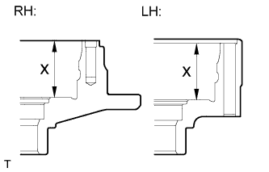 |
Measure the differential case LH and RH dimensions labeled X shown in the illustration.
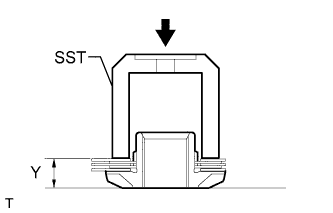 |
Install the 3 thrust washers and 2 clutch plates to the side gear.
Using SST to press down the thrust washers and clutch plates with a force of approximately 98 N*m (1000 kgf*cm, 72 ft.*lbf), measure dimension "Y" shown in the illustration.
Referring to the following table, select the proper adjusting shim.
| Mark | Specified Condition |
| A | 0.20 mm (0.00787 in.) |
| B | 0.25 mm (0.00984 in.) |
| C | 0.30 mm (0.0118 in.) |
| D | 0.35 mm (0.0138 in.) |
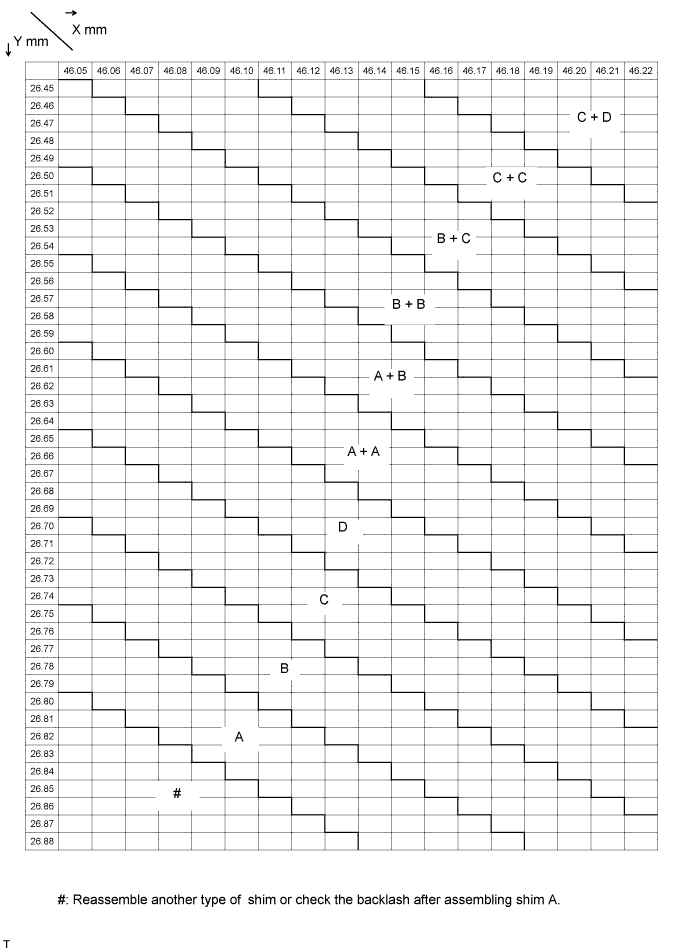
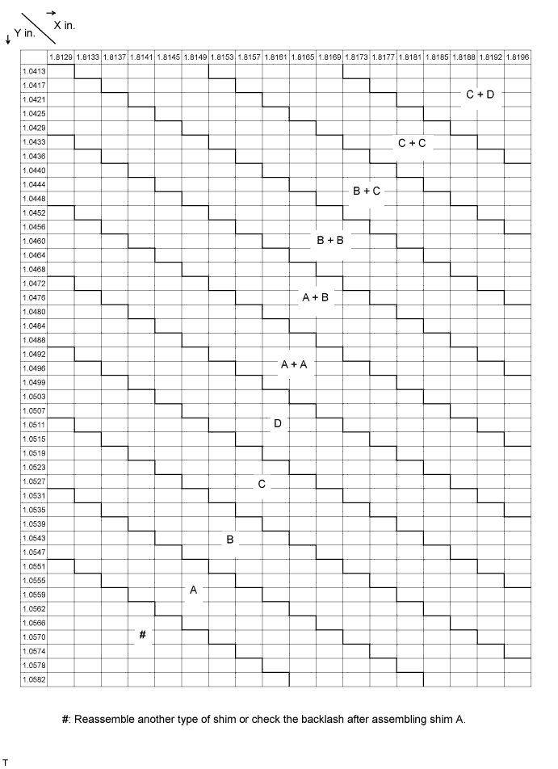
| 2. INSPECT REAR DIFFERENTIAL SIDE GEAR |
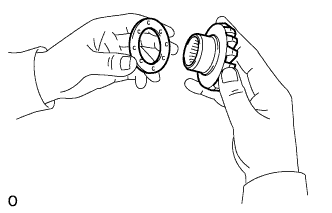 |
Install the thrust washers, clutch plates and adjusting shim to the side gear.
Install the side gear to the differential case.
Install the 4 pinion gears and thrust washers to the spider.
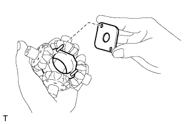 |
Align the spring retainer holes with the straight pins and install the retainer.
Install the spider assembly to the differential case.
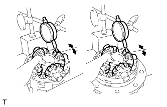 |
Using the dial indicator, measure the side gear backlash while holding the side gear and spider.
| 3. ASSEMBLE DIFFERENTIAL CASE |
Install the spider assembly to the differential case LH.
Install the compression spring and spring retainer RH.
Install the side gear assembly RH.
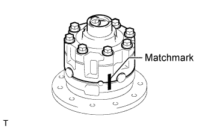 |
Align the matchmarks and assemble the differential case LH and RH.
Install the 8 bolts and tighten them uniformly, a little at a time.
| 4. INSTALL REAR DIFFERENTIAL CASE BEARING |
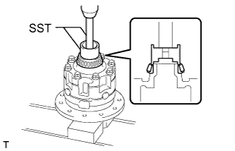 |
Using SST and a press, press the RH side bearing (inner race) into the differential case.
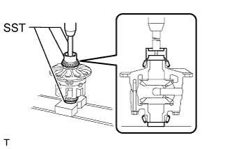 |
Using SST and a press, press the LH side bearing (inner race) into the differential case.
| 5. INSTALL DIFFERENTIAL RING GEAR |
Clean the threads of the bolts and differential case with non-residue solvent.
Clean the contact surface of the differential case and ring gear.
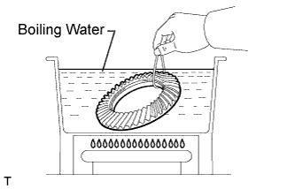 |
Heat the ring gear to about 100°C (212°F) in boiling water.
Carefully take the ring gear out of the boiling water.
After the moisture on the ring gear has completely evaporated, quickly align the matchmarks on the ring gear and differential case and set the ring gear onto the differential case. Then temporarily install the 12 bolts so that the bolt holes in the ring gear and differential case are aligned.
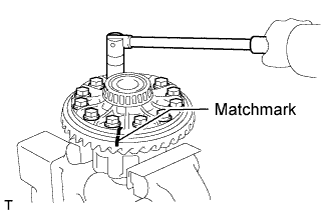 |
After the ring gear cools down sufficiently, remove the 12 bolts. Then apply thread lock adhesive to the 12 bolts and install them.
| 6. INSPECT DIFFERENTIAL RING GEAR RUNOUT |
Place the bearing outer races on their respective bearings.
Install the assembled plate washers to the side bearing.
Install the differential case to the differential carrier.
Align the matchmarks on the bearing caps and differential carrier.
Install and uniformly tighten the 4 bolts a little at a time.
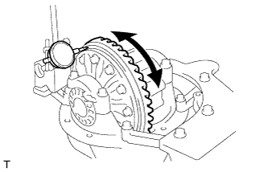 |
Using a dial indicator, measure the ring gear runout.
Remove the differential case.
| 7. INSTALL REAR DRIVE PINION FRONT TAPERED ROLLER BEARING |
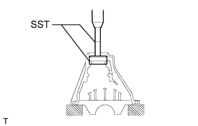 |
Using SST and a press, press in the bearing (outer race).
| 8. INSTALL REAR DRIVE PINION REAR TAPERED ROLLER BEARING |
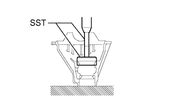 |
Using SST and a press, press in the bearing (outer race).
| 9. INSTALL REAR DRIVE PINION REAR TAPERED ROLLER BEARING |
Install the washer to the drive pinion.
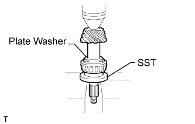 |
Using SST and a press, press the rear bearing (inner race) into the drive pinion.
| 10. INSPECT DIFFERENTIAL DRIVE PINION PRELOAD |
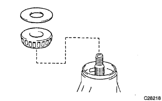 |
Install the drive pinion, front bearing (inner race) and oil slinger.
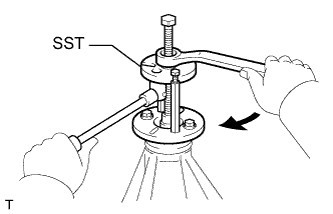 |
Using SST, install the companion flange.
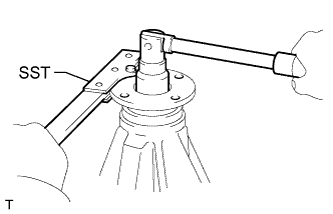 |
Using SST to hold the companion flange, install the nut.
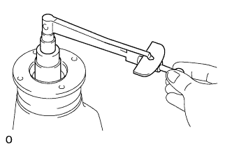 |
Using a torque wrench, measure the preload.
| Bearing | Specified Condition |
| New | 1.0 to 1.7 N*m (11 to 17 kgf*cm, 10 to 14 in.*lbf) |
| Reused | 0.9 to 1.4 N*m (9 to 13 kgf*cm, 8 to 12 in.*lbf) |
| 11. INSTALL REAR DIFFERENTIAL CASE SUB-ASSEMBLY |
Place the bearing outer races on their respective bearings.
Install the differential case to the carrier.
| 12. INSTALL REAR DIFFERENTIAL BEARING ADJUSTING NUT |
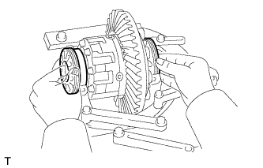 |
Install the 2 adjusting nuts to the carrier, making sure the nuts are threaded properly.
| 13. INSPECT DIFFERENTIAL RING GEAR BACKLASH |
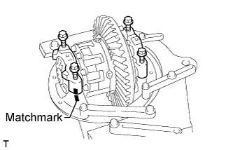 |
Align the matchmarks on the bearing caps and carrier. Screw in the 4 bearing cap bolts 2 or 3 turns and press down the bearing caps by hand.
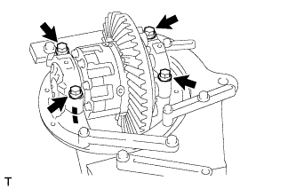 |
Tighten the 4 bolts.
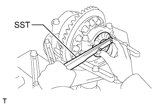 |
Loosen the 4 bolts to the point where the adjusting nuts can be turned by SST.
Using SST, tighten the adjusting nut on the ring gear side until the ring gear has a backlash of about 0.2 mm (0.00787 in.).
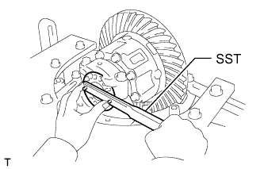 |
While turning the ring gear, use SST to tighten the adjusting nut on the drive pinion side. After the bearings are settled, loosen the adjusting nut on the drive pinion side.
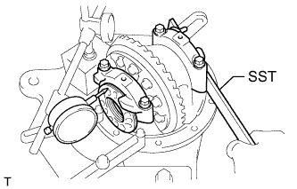 |
Place a dial indicator on the top of the adjusting nut on the ring gear side.
Adjust the side bearing to 0 preload by tightening the other adjusting nut until the pointer on the indicator begins to move.
Using SST, tighten the adjusting nut 1 to 1.5 notches from the 0 preload position.
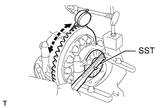 |
Using a dial indicator, adjust the ring gear backlash until it is within the specification.
Tighten the 4 bearing cap bolts.
After rotating the ring gear 5 turns or more, recheck the ring gear backlash.
| 14. INSPECT TOTAL PRELOAD |
Using a torque wrench, measure the preload with the teeth of the drive pinion and ring gear in contact.
| Bearing | Specified Condition |
| New | Standard drive pinion preload plus 0.4 to 0.6 N*m (4 to 6 kgf*cm, 4 to 5 in.*lbf) |
| Reused | Standard drive pinion preload plus 0.4 to 0.6 N*m (4 to 6 kgf*cm, 4 to 5 in.*lbf) |
| 15. INSPECT TOOTH CONTACT BETWEEN RING GEAR AND DRIVE PINION |
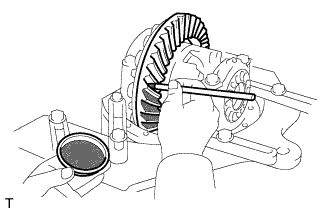 |
Coat 3 or 4 teeth at 3 different positions on the ring gear with Prussian blue.
Turn the companion flange in both directions to inspect the ring gear for proper tooth contact.
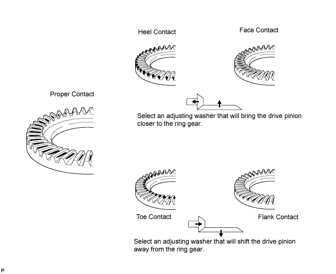
| Specified Condition | Specified Condition |
| 1.04 to 1.06 mm (0.0409 to 0.0417 in.) | 1.315 to 1.335 mm (0.0518 to 0.0526 in.) |
| 1.065 to 1.085 mm (0.0420 to 0.0427 in.) | 1.34 to 1.36 mm (0.0528 to 0.0535 in.) |
| 1.09 to 1.11 mm (0.0419 to 0.0437 in.) | 1.365 to 1.385 mm (0.0537 to 0.0545 in.) |
| 1.115 to 1.135 mm (0.0439 to 0.0447 in.) | 1.39 to 1.41 mm (0.0547 to 0.0555 in.) |
| 1.14 to 1.16 mm (0.0449 to 0.0457 in.) | 1.415 to 1.435 mm (0.0558 to 0.0565 in.) |
| 1.165 to 1.185 mm (0.0459 to 0.0467 in.) | 1.44 to 1.46 mm (0.0567 to 0.0575 in.) |
| 1.19 to 1.21 mm (0.0469 to 0.0476 in.) | 1.465 to 1.485 mm (0.0577 to 0.0585 in.) |
| 1.215 to 1.235 mm (0.0478 to 0.0486 in.) | 1.49 to 1.51 mm (0.0587 to 0.0595 in.) |
| 1.24 to 1.26 mm (0.0488 to 0.0496 in.) | 1.515 to 1.535 mm (0.0597 to 0.0605 in.) |
| 1.265 to 1.285 mm (0.0498 to 0.0506 in.) | 1.54 to 1.56 mm (0.0607 to 0.0615 in.) |
| 1.29 to 1.31 mm (0.0508 to 0.0516 in.) | - |
| 16. REMOVE DRIVE PINION COMPANION FLANGE REAR NUT |
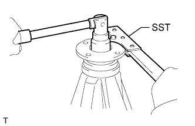 |
Using SST to hold the flange, remove the nut.
| 17. REMOVE REAR DRIVE PINION COMPANION FLANGE REAR SUB-ASSEMBLY |
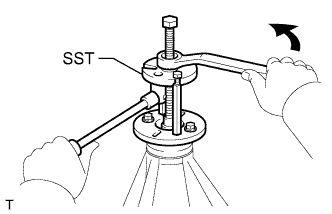 |
Using SST, remove the companion flange.
| 18. REMOVE REAR DIFFERENTIAL DRIVE PINION OIL SLINGER |
| 19. REMOVE REAR DRIVE PINION FRONT TAPERED ROLLER BEARING |
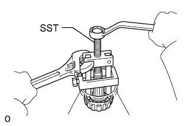 |
Using SST, remove the front bearing (inner race) from the drive pinion.
| 20. INSTALL REAR DIFFERENTIAL DRIVE PINION BEARING SPACER |
Install a new spacer to the drive pinion.
| 21. INSTALL REAR DRIVE PINION FRONT TAPERED ROLLER BEARING |
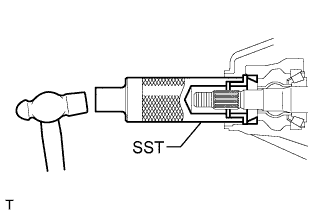 |
Using SST and a hammer, tap in the bearing (outer race).
Install the bearing (inner race).
| 22. INSTALL REAR DIFFERENTIAL DRIVE PINION OIL SLINGER |
| 23. INSTALL REAR DIFFERENTIAL CARRIER OIL SEAL |
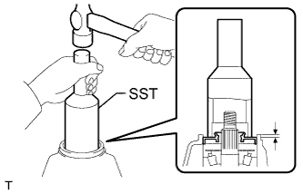 |
Using SST and a hammer, tap in a new oil seal.
Coat the lip of the oil seal with MP grease.
| 24. INSTALL REAR DRIVE PINION REAR COMPANION FLANGE SUB-ASSEMBLY |
Using SST, install the companion flange.
| 25. INSPECT DRIVE PINION PRELOAD |
Coat the threads of a new nut with hypoid gear oil.
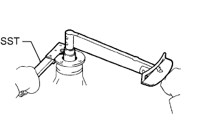 |
Using SST to hold the companion flange, install the nut by tightening it until the standard preload is reached.
Using a torque wrench, measure the preload.
| Bearing | Specified Condition |
| New | 1.0 to 1.7 N*m (11 to 17 kgf*cm, 10 to 14 in.*lbf) |
| Reused | 0.9 to 1.4 N*m (9 to 13 kgf*cm, 8 to 12 in.*lbf) |
| 26. INSPECT TOTAL PRELOAD |
Using a torque wrench, measure the preload with the teeth of the drive pinion and ring gear in contact.
| Bearing | Specified Condition |
| New | Standard drive pinion preload plus 0.4 to 0.6 N*m (4 to 6 kgf*cm, 4 to 5 in.*lbf) |
| Reused | Standard drive pinion preload plus 0.4 to 0.6 N*m (4 to 6 kgf*cm, 4 to 5 in.*lbf) |
| 27. INSPECT DIFFERENTIAL RING GEAR |
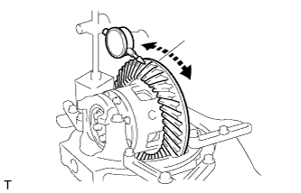 |
Using a dial indicator, measure the ring gear backlash.
| 28. INSPECT RUNOUT OF REAR DRIVE PINION COMPANION FLANGE REAR SUB-ASSEMBLY |
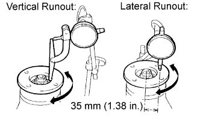 |
Using a dial indicator, measure the runout of the companion flange vertically and laterally.
| Runout | Specified Condition |
| Vertical runout | 0.10 mm (0.00394 in.) |
| Lateral runout | 0.10 mm (0.00394 in.) |
| 29. STAKE DRIVE PINION COMPANION FLANGE REAR NUT |
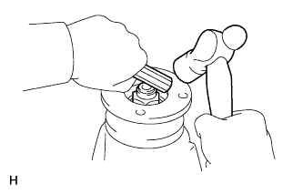 |
Using a chisel and hammer, stake the nut.
| 30. INSTALL REAR DIFFERENTIAL BEARING ADJUSTING NUT LOCK |
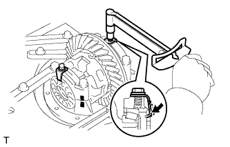 |
Install 2 new nut locks to the bearing caps.
Install the 2 bolts, and bend the nut locks.